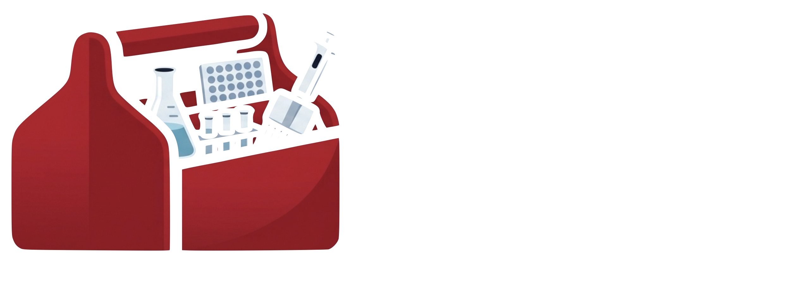

Preclinical Imaging Facility ManagerMolecular Imaging Research Facility (MIRF), Centre for Comparative MedicineThe University of British ColumbiaVancouver, Canada
Research facility leader · Imaging scientist · Builder of research operations tools
I lead a multimodal imaging core, and I set both where it goes and how it runs.
MIRF, the Molecular Imaging Research Facility, is the University of British Columbia's small-animal in vivo imaging facility, with SPECT, PET and CT on one platform. I am responsible for the scientific direction and service model, the budget and pricing, radiation safety and animal ethics compliance, the people, and the relationships with the groups at UBC, TRIUMF, SFU, BC Cancer and BC Children's Hospital whose studies come through the door. I work alongside the facility's academic co-directors, Profs. Vesna Sossi (UBC Physics and Astronomy) and Urs Häfeli (UBC Pharmaceutical Sciences).
I am a chemist by training, an imaging scientist by trade, and I write software when the lab needs a tool that does not exist yet. I also design the figures, posters and web pages the lab puts its name to.
A core facility is a small organisation. Running one means science, operations and strategy at the same time.
Direction and strategy
Define the service model, pricing and capacity of the facility, and where it invests next.
Own the budget of a fully cost-recovered facility.
Report to institutional and scientific oversight bodies, including TRIUMF's Life Sciences committee.
Build and maintain the partnerships that bring studies in: UBC, TRIUMF, SFU, BC Cancer, BC Children's Hospital.
Operations and compliance
Radiation safety, animal ethics protocols and institutional compliance across every study.
Instrument lifecycle: QC, calibration, service contracts and vendor relationships.
Scheduling, isotope logistics, invoicing and study documentation.
Supervise and train the technical team and the students and users who work in the lab.
Science and training
Guide investigators from study design to interpretation, so the imaging answers the question they actually asked.
Set the quantification methodology: calibrations, cross-calibrations, %ID/g and dosimetry workflows.
Lead trainer for optical imaging (Lago X) in UBC Pharmaceutical Sciences.
Co-instructor of PHAR 518 (Faculty of Pharmaceutical Sciences) since 2015, and lead of the facility's annual hands-on imaging workshops and one-on-one data-analysis training.
Advise other groups setting up imaging capacity, most recently a new microCT facility.
2014At the facility since; leading it since 2020
5Modalities I have run: SPECT, PET, CT, optical, microCT
17+Collaborating research groups supported
25Research projects supported in the latest programme report
Journey
One thread, three chapters: designing molecules to see disease, running the scanners that image them, and writing the software that measures what they show.
MSc, Chemistry UAB · 2005PhD, Medicinal and Bioinorganic Chemistry UAB · 2009Beatriu de Pinós Fellow 2010 to 2014ADDF Young Investigator Scholarship 2012WMIC MOMIL grant, imaging-facility leaders 2019MILabs Image of the Year 2020
The facility at a glance
17+ research groups · 5 institutions25 active projects latest report5 modalities across 3 UBC facilitiesRFSG 2020 · NSERC RTI 2025 funding secured61 peer-reviewed publications h-index 26
01
2003 to 2009Barcelona, Spain
Foundations: chemistry for seeing disease
I trained as a chemist at the Universitat Autònoma de Barcelona: an MSc with the highest distinction, then a PhD in medicinal and bioinorganic chemistry, graded Excel·lent cum laude, while teaching full-time as a Professora Ajudant in the Department of Chemistry. My doctoral work asked a question that has followed me ever since: can we design small molecules that bind the metal ions and amyloid aggregates behind Alzheimer's disease and be seen inside a living body? Answering it meant synthesis, metal-protein titrations, spectroscopy and computational screening, and research stays at two of Barcelona's leading research institutes: at ICMAB-CSIC, organic chemistry and my first hands-on radiochemistry, labelling molecules with technetium-99m and iodine-123 for in vivo imaging; at IQS, amyloid peptide studies, intercalation and fluorescence.
MSc, Chemistry (Matrícula d'Honor)
Universitat Autònoma de Barcelona · 2003 to 2005
Professora Ajudant (Assistant Lecturer)
UAB Department of Chemistry · Sep 2005 to Sep 2009
PhD, Medicinal and Bioinorganic Chemistry (Excel·lent cum laude)
J. Am. Chem. Soc. · 2009 · the thesis in one paper
Analytical Chemist, industry placement during my degree
Ingeniería Analítica S.L. · Feb to Jul 2003
Molecules designed to be seen need scanners to see them, and a lab that can evaluate them in living systems.
02
2010 to 2014Vancouver, Canada
From molecules to images
A Beatriu de Pinós fellowship brought me to UBC with independent funding to push the same radiotracer idea toward the clinic: synthesizing theranostic candidates for Alzheimer's disease and evaluating them in live cells, against proteins and enzymes, and for toxicity. In parallel I went deeper into computation, applying DFT, molecular docking and virtual screening first to my own Alzheimer's molecules and later to cannabinoid CB2 agonists with the Faculty of Pharmaceutical Sciences. I also took stock of the field: a review in Coordination Chemistry Reviews mapping the molecular scaffolds for metal-targeting Alzheimer's therapeutics was listed among ScienceDirect's most-downloaded articles for the journal. This is the period when evaluating a compound stopped meaning a spectrum and started meaning an image, and when the Alzheimer's Drug Discovery Foundation recognized the work with a Young Investigator Scholarship.
Beatriu de Pinós Postdoctoral Fellow, Medicinal Chemistry
The University of British Columbia · competitive independent funding · Jul 2010 to Oct 2014
Computer-Aided Drug Design Researcher
UBC Faculty of Pharmaceutical Sciences · Oct 2013 to Oct 2014
I had molecules ready to go in vivo. What I did not have was anywhere to image them.
03
2014 to todayVancouver, Canada
Making the facility the place I once needed
During my postdoc, once all the in vitro work was done, the cell assays, the binding and aggregation studies, the toxicity, my molecules were ready for the last step: into a living animal, in vivo, on a preclinical scanner. I could not take it. UBC's preclinical PET, SPECT and CT facility was only just being set up, and the pieces a researcher needs for that step, the radiochemistry, the animal protocols, the scanner operator, someone who could quantify the image and also understand the biochemistry and pharmacokinetics of a radiotracer, were scattered across people who did not yet know each other, or did not speak the same scientific language. I had the molecules and the in vitro data; what I did not have was a scanner I could book, an operator, and someone to quantify the images. The preclinical imaging lab at the Centre for Comparative Medicine was still being built, and it was not yet clear whether it would be a shared resource at all. For a researcher, that is the usual story: the pieces of the puzzle are never in the same place at the same time. The lab had been founded in 2012 by three principal investigators, Profs. Vesna Sossi and Urs Häfeli and Dr. Paul Schaffer of TRIUMF, around a VECTor/CT scanner. So when a position opened there in 2014, I applied with one idea in mind: make this the place where the puzzle is already assembled, so that the next researcher walking in would find all the pieces together, from the design of the experiment to the analysis of the data.
I joined as lab manager and research associate and helped build the PET, SPECT and CT platform into a reproducible, quantitative operation. The science that came through the scanner was wide-ranging: radiometal chelators and theranostic pairs, radiolabelled antibodies, peptides and polymers, drug-delivery nanoparticles and inhaled aerosols, alpha-emitter decay chains and image-based dosimetry. From 2015 I also brought that work into the classroom as co-instructor of PHAR 518 at the Faculty of Pharmaceutical Sciences. And as word spread, what had started as one research group's scanner became a shared resource: more and more groups from UBC, then from other local institutions, then from academic centres and companies abroad, came to us for imaging, and the lab became the Molecular Imaging Research Facility, with a service model open to all of them. It has run on cost recovery from the start, with no departmental or faculty funding; the one-time, competitive UBC Research Facilities Support Grant it won in 2020 was earned on the same terms as any research grant. The 2020 MILabs Image of the Year came out of this work.
In December 2020 my role was formalized as the facility's manager, with more responsibility and more independence, and the facility's reach widened with it. The partnership at its heart did not change: Profs. Vesna Sossi and Urs Häfeli, two of its founders, remain its academic co-directors, and their mentorship has shaped both the scientist and the manager I became. Within that partnership I own the facility's day-to-day direction: its service model and cost-recovered budget, accountability for radiation-safety and animal-ethics compliance and for reporting to its oversight bodies, and the working relationships with UBC, TRIUMF, SFU, BC Cancer and BC Children's Hospital that bring 17+ research groups and 25 active projects through the door. That operating model has since travelled beyond MIRF: I guided two other UBC laboratories, an optical imaging platform and a new sub-20 µm microCT facility, through their set-up and first year of operation, so my experience now spans five modalities across three facilities. And because the bottlenecks that once stopped me were the same ones stopping my users, I built the software to remove them, which became LabTools.
Lab Manager and Research Associate, Preclinical Nuclear Imaging
The University of British Columbia · Oct 2014 to Dec 2020
Co-instructor, PHAR 518
UBC Faculty of Pharmaceutical Sciences · since 2015
WMIC MOMIL grant for leaders of imaging facilities
World Molecular Imaging Congress · 2019
MILabs Image of the Year, Laboratory Award
2020
Funding secured for the platform
UBC Research Facilities Support Grant 2020 · NSERC RTI 2025
Preclinical Imaging Facility Manager, MIRF
UBC Centre for Comparative Medicine · Dec 2020 to present
Optical Imaging Specialist and Lead Trainer, Lago X
UBC Faculty of Pharmaceutical Sciences · 2024 to present
Research facility leader · Imaging scientist · Builder of research operations tools. I run UBC's small-animal in vivo imaging core, a PET, SPECT and CT facility serving research groups across UBC, TRIUMF, SFU, BC Cancer and BC Children's Hospital, alongside its academic co-directors, Profs. Vesna Sossi and Urs Häfeli. I own its service model, budget and pricing as a fully cost-recovered operation, hold its radiation-safety and animal-ethics compliance, report to institutional and scientific oversight, and lead the partnerships that bring studies in. I joined the lab in 2014 and helped build it into the facility I now run; beyond MIRF, I have helped two other UBC laboratories establish optical imaging and microCT capabilities, so my operating experience spans five modalities across three facilities. What I bring is a combination that rarely sits in one person: a research scientist's judgement (PhD in medicinal chemistry, 61 peer-reviewed publications), an operator's discipline in budgets, compliance, governance and multi-partner delivery, and the ability to build the operational systems a facility needs, from standardised protocols and training to the software (LabTools) that now runs its SOPs, inventory, transfers and reporting.
Experience
Dec 2020 to present
Preclinical Imaging Facility Manager, Molecular Imaging Research Facility (MIRF)
The University of British Columbia, Centre for Comparative Medicine
Strategy and operating model. Define the service portfolio, pricing, capacity and investment priorities of UBC's preclinical PET, SPECT and CT core, built around a VECTor/CT system that acquires all three modalities simultaneously, serving 17+ research groups and 25 active projects. Own the budget of a fully cost-recovered facility; rebuilt its financial and activity reporting into a single ledger and benchmarked its rate card against comparable Canadian facilities.
Governance and compliance. Accountable for radiation-safety and animal-ethics compliance across every study; report to institutional and scientific oversight including TRIUMF's Life Sciences committee; manage the instrument lifecycle, QC and calibration programmes, service contracts and SOPs.
Partnerships and scientific leadership. Build the relationships that sustain the facility with investigators, departments and partner institutions; negotiate scope and resources for multi-year studies; set the quantification methodology behind 63 facility publications since 2014.
People and capacity building. Supervise and train technical staff, students and users; lead the annual imaging workshops; advised another UBC lab through its first year of a new microCT facility; lead trainer for optical imaging across Pharmaceutical Sciences labs.
Operational technology. Designed and built LabTools, the software that replaced the facility's manual processes for SOPs, isotope inventory, animal transfers and figures, now shared with other labs.
Oct 2014 to Dec 2020
Lab Manager and Research Associate, Preclinical Nuclear Imaging
The University of British Columbia
Helped build and expand UBC's preclinical PET, SPECT and CT platforms with investigators across UBC, TRIUMF and local biotech. Instrument maintenance, workflow optimization, user training, study design and scientific reporting.
2015 to present
Co-instructor, PHAR 518
UBC Faculty of Pharmaceutical Sciences
2024 to present
Optical Imaging Specialist and Lead Trainer, Lago X
UBC Faculty of Pharmaceutical Sciences, Analytical Suite
Designated trainer and technical resource for the Lago X optical imager: fluorescence and bioluminescence study design, standardized acquisition and analysis protocols, troubleshooting across labs.
2024 to 2025
microCT Imaging Advisor (MILabs)
The University of British Columbia
Advised a UBC lab establishing a new MILabs microCT facility through its first year: site setup, workflow and operational practice.
Jul 2010 to Oct 2014
Beatriu de Pinós Postdoctoral Fellow, Medicinal Chemistry
The University of British Columbia. Independently funded; led the project
Designed, synthesized and evaluated small-molecule radiotracers for theranostic applications in Alzheimer's disease: live-cell assays, protein binding and aggregation, enzyme inhibition, cytotoxicity and structure-based design.
Oct 2013 to Oct 2014
Computer-Aided Drug Design Researcher
UBC Faculty of Pharmaceutical Sciences
Homology modelling, virtual screening, docking and binding free-energy prediction to identify novel agonists of the Cannabinoid Receptor 2.
Sep 2005 to Sep 2009
Professora Ajudant (Assistant Lecturer)
Universitat Autònoma de Barcelona (UAB), Department of Chemistry
Full-time teaching appointment (undergraduate lectures and laboratory courses) held throughout the doctorate, which was carried out in the UAB Department of Chemistry with collaborations and research stays at ICMAB-CSIC and IQS Barcelona.
Mar to Jul 2007
Visiting Researcher, IQS Barcelona
Amyloid-disease research
Characterization of amyloid-β, amylin and transthyretin and their interactions with small-molecule drug leads.
Feb 2004 to Jun 2006
Visiting Researcher, ICMAB-CSIC
Radiochemistry
Synthetic strategies for incorporating iodine-123 into small molecules for in vivo imaging; synthesis and characterization of metal complexes.
Feb to Jul 2003
Analytical Chemist
Ingeniería Analítica S.L.
Analytical methods for drugs, biogas, polymers and fragrances by HPLC, GC and GC/MS.
Selected initiatives
Sustainability
Making a cost-recovered facility legible to leadership
Unified financial and activity reporting with calendar- and fiscal-year views, and pricing benchmarked against comparable Canadian facilities.
Operations
Reproducible, quantitative imaging
Built the QC, calibration and cross-calibration programmes, training and documentation that make MIRF's PET, SPECT and CT results consistent from study to study and from user to user, so investigators can publish quantitative data from the facility with confidence.
Capacity
Five modalities across three facilities
Carried that operating model to two other UBC laboratories: an optical imaging platform (fluorescence and bioluminescence, in vivo and ex vivo) where I became lead trainer, and a new microCT facility (below 20 µm resolution, for ex vivo skull and dental specimens and in vivo mice) which I advised through its first year.
Technology
LabTools
Replaced folders of Word files, spreadsheets and email threads with purpose-built tools for SOPs, isotope inventory, animal transfers and figures; now shared openly with academic labs.
Education
2005 to 2009
PhD, Medicinal and Bioinorganic Chemistry (Excel·lent cum laude, the highest doctoral grade)
Universitat Autònoma de Barcelona (UAB), Spain
Drug-like molecules as candidate radiotracers for Alzheimer's disease: target validation, metal-protein titrations, circular dichroism and fluorescence assays, chemoinformatics pipelines for library triage.
WMIC MOMIL grant, Managers of Molecular Imaging Labs
World Molecular Imaging Congress, Montreal · awarded to leaders of small-animal imaging facilities
2010 to 2014
Beatriu de Pinós Fellowship
Competitive independent postdoctoral funding, one of four in the Science panel, held at UBC
2012
ADDF Young Investigator Scholarship
Alzheimer's Drug Discovery Foundation
2012
ScienceDirect Top 25 most-downloaded article
Coordination Chemistry Reviews
2005, 2007
First-prize research communication awards
Bioinorganic Scientific Meeting, Barcelona · ICBIC, Vienna
Invited lectures
2024
Introduction to Optical Imaging in Research
MBF and CDM Annual Meeting, The University of British Columbia
2020
Imaging with a SPECT/CT System: Seeing is Believing
International Laboratory Animal Technician Week, Vancouver
2019
Dual Labelling and SPECT Imaging of a Drug and its Delivery System Concurrently
Canadian Society for Pharmaceutical Sciences, Richmond, BC
2016
Keynote: Preclinical Imaging in Research and Innovation. Current Trends
4th Meeting of the Faculty of Chemical Engineering (CONFIQ-4), Mérida, Mexico
Professional service
2015 to present
Organizing committee, International Conference on the Scientific and Clinical Applications of Magnetic Carriers
Biennial meeting; most recent edition ~330 participants
Ongoing
Peer reviewer for ACS and RSC journals
Molecular BioSystems, MedChemComm, Metallomics, Medicinal Research Reviews, ACS Chemical Biology
Translation
Scientific translator of The Elements (Theodore Gray) into Catalan
240 pages · Black Dog & Leventhal, New York
Publications
2009
Design, Selection, and Characterization of Thioflavin-Based Intercalation Compounds with Metal Chelating Properties for Application in Alzheimer's Disease
Quantitative dual-isotope preclinical SPECT/CT imaging and biodistribution of the mercury-197m/g theranostic pair with [197m/gHg]HgCl2 and a [197m/gHg]Hg-tetrathiol complex as a platform for radiopharmaceutical development
The thesis idea in one paper: thioflavin scaffolds re-engineered to chelate the metals behind Alzheimer's plaques — designed to bind, and designed to be seen.
The mercury-197m/g theranostic pair imaged quantitatively in one dual-isotope acquisition — the method the facility's current theranostics work is built on.
Software for the lab that had to be written, because it did not exist.

LabTools is an independent software initiative born inside a working imaging facility. Every tool began as a real bottleneck: a figure that took a day to assemble, an isotope log kept on paper, an SOP nobody could find, a transfer request buried in email. I write the tool, the facility runs on it, and when it is solid enough it is released so other labs can use it too.